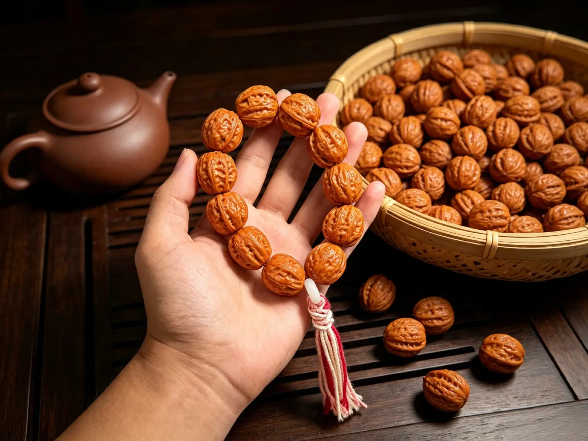

In der Welt der traditionellen chinesischen Accessoires begegnen viele Menschen zuerst exotischen Bodhi-Samen-Armbändern aus anderen Kulturen. Nur wenige wissen, dass das Qiuzi-Walnuss-Armband ein wahrhaft einheimischer chinesischer Schatz ist — eine taoistische Meditationsperlen-Tradition, die seit über tausend Jahren in diesem Land verwurzelt ist, ohne jeglichen fremden kulturellen Einfluss. Vollständig aus wilden Walnüssen hergestellt, die tief in den nördlichen Bergen Chinas zu finden sind, sammelten die Alten diese natürlichen Nüsse und polierten sie zu Armbändern, in die sie Philosophie, Weisheit und glückbringende Wünsche einflochten. Ihr zurückhaltender, kontemplativer östlicher Charakter wird besonders von überseeischen Liebhabern der chinesischen Kultur geschätzt.
Lange bevor buddhistische Gebetsketten in China ankamen, praktizierten taoistische Anhänger bereits die Tradition der "fliessenden Perlen" (Liuzhu), wie im taoistischen Kanon Taixuan Jin Suo Liu Zhu Yin aufgezeichnet. Antike taoistische Einsiedler und Gelehrte, die in den Bergen lebten, mussten nicht in ferne Länder reisen, um exotische Samen zu finden — sie sammelten einfach natürlich gereifte Qiuzi-Walnüsse in den Wäldern um sie herum, reinigten und polierten sie zu Armbändern und verwendeten sie für tägliche Meditation und stille Kontemplation.
In den Bergen geboren, den wechselnden Jahreszeiten, Sonne, Wind und Regen ausgesetzt, tragen diese Walnüsse die natürliche Energie der Wildnis. Die Alten glaubten, dass das Tragen von Gegenständen aus der Natur in der Nähe des Körpers ein Weg war, in Harmonie mit den Jahreszeiten und der Natur selbst zu leben — der einfachste Ausdruck der östlichen Philosophie der "Einheit von Himmel und Mensch".
1. Grate und Täler: Die Höhen und Tiefen des Lebens annehmen
Jede Qiuzi-Walnuss ist mit natürlichen, unebenen Maserungen bedeckt — keine zwei sind genau gleich, genauso wie keine zwei Lebenswege gleich sind. Die Grate und Rillen der Walnuss entsprechen den glatten Momenten des Lebens und den schwierigen Phasen: man muss sich den unvermeidlichen Wendungen nicht widersetzen. Jede Erfahrung wird, wie die Maserung der Walnuss, zu Ihrer eigenen einzigartigen Spur. Das langsame Reiben und Polieren der Rillen im Laufe der Zeit ist auch eine Art, sich mit den Unvollkommenheiten des Lebens abzufinden und die Fülle der menschlichen Erfahrung anzunehmen.
2. Mit der Zeit geschmeidiger werden: Geduld bringt Wärme
Ein neu erworbenes Qiuzi-Walnuss-Armband fühlt sich etwas rau und trocken an. Aber mit geduldigem, täglichem Tragen — Finger, die über Monate und Jahre sanft die Oberfläche reiben — entwickelt es allmählich eine reiche Patina und verwandelt sich in eine warme, durchscheinende bernsteinähnliche Oberfläche. Dies spiegelt genau die östliche Philosophie wider: Nur durch den Lauf der Zeit, die ständige Verfeinerung des Charakters und das Ablegen von Rauheit und scharfen Kanten kann ein Mensch sanft, weise und still gefasst werden. Die Erfahrungen des Lebens sind niemals eine Last — sie sind die Quelle innerer Wärme und Anmut.
3. Natürlich runde Form: Die Philosophie des "Aussen rund, innen eckig"
Die natürliche runde Form der Qiuzi-Walnuss trägt das klassische östliche Prinzip des "aussen rund, innen eckig": bewahren Sie feste Prinzipien und Integrität im Inneren (einen harten, soliden Kern), während Sie im Umgang mit anderen sanft und harmonisch sind (eine glatte, abgerundete Aussenseite). Weder laut noch scharf, navigiert man mit Klarheit und Anmut durch die Welt, ohne sein wahres Selbst zu verlieren.

1. "He" (Harmonie): Frieden in der Familie und die Sammlung von Glück
In der chinesischen Kultur teilt sich das Wort für "Walnuss" (hé) den Klang mit dem Wort für "Harmonie" (hé). Dies impliziert familiäre Einheit, harmonische Beziehungen und die perfekte Ausrichtung aller Dinge — sowie die Sammlung von Glück aus allen Richtungen. Das tägliche Tragen bringt reibungsloses Fortkommen und glückliche Begegnungen.
2. Reichhaltige Kerne: Ein gütiges Herz und dauerhafte Segnungen
Der pralle, feste Kern der Walnuss repräsentiert "Menschlichkeit" (rén) — die Qualität der Güte und eines guten Herzens. Es symbolisiert, dass man durch Freundlichkeit gegenüber anderen dauerhaftes Glück erlangt. Die Fülle der Kerne deutet auch auf Wohlstand, Überfluss, Gesundheit Jahr für Jahr und stetig wachsenden Reichtum hin.
3. In der Wildnis geboren: Freiheit und natürliches Glück
Im Gegensatz zu massenproduzierten, künstlich geschnitzten Ornamenten werden Qiuzi-Walnüsse auf natürliche Weise in den Bergen geformt und absorbieren die Energie der vier Jahreszeiten. Die Alten glaubten, dass in der Wildnis geborene Gegenstände natürliche Segnungen tragen, die helfen können, die Sorgen und das Unglück des Trägers zu zerstreuen und einen entspannteren und positiveren Lebenszustand zu fördern. Es repräsentiert das Ideal, dem Lärm und der Angst des modernen Lebens zu entfliehen, zur Einfachheit zurückzukehren und dabei kontinuierlich die Segnungen der Natur zu empfangen.
4. Taoistische Meditationsperlen: Den Geist beruhigen und Glück einladen
In stillen Momenten schafft das langsame Drehen jeder Perle mit den Fingerspitzen einen beruhigenden Rhythmus, der den Geist beruhigt und Stress und Angst lindert. Die Alten nutzten diese Praxis, um ihren Geist zu beruhigen und Einsicht zu finden — und wenn das Herz ruhig ist, kommt das Glück von selbst. Im Laufe der Zeit trägt die Veränderung der Patina des Armbands auch die schöne Bedeutung von "Bitterkeit weicht Süsse" — eine allmähliche Aufwärtswendung des Glücks und das Eintreffen besserer Tage.
5. Harte Schale: Schutz, Sicherheit und Abwehr von Hindernissen
Die harte, dicke Schale der Walnuss wurde seit langem als natürlicher Schutz-Talisman angesehen, der Sicherheit und reibungslose Reisen im Alltag symbolisiert. Es wird angenommen, dass sie dem Träger hilft, unerwartete Schwierigkeiten abzuwehren und das bereits vorhandene Glück und den Wohlstand zu bewahren, während sie stetig neue Möglichkeiten und Segnungen willkommen heisst.

Das abgebildete Armband wird mit Accessoires wie Bernstein, einer Kürbisflasche und einem herzförmigen Jade-Anhänger kombiniert — jedes bringt seinen eigenen besonderen Segen:
Kürbisflasche: Das Wort für "Kürbis" (hú) klingt nach "Glück" (fú) und "Wohlstand" (lù) und fügt eine weitere Ebene von Segnungen für Glück und ein sorgenfreies Leben hinzu.
Warme Bernsteinperlen: Der warme, leuchtende Bernstein symbolisiert Wärme, Gesundheit und positive Beziehungen — und verbessert die sozialen Verbindungen und die Ausstrahlung.
Herzförmiger Jade-Anhänger: Repräsentiert ein friedvolles Herz und die ständige Begleitung von Freude — jede Segnung mit ruhigem und offenem Geist empfangen.
Zusammen schaffen diese Elemente eine schön ausgewogene Komposition — die rustikalen Bergwalnüsse kombiniert mit warmen, polierten Ornamenten, schlicht, aber raffiniert, zurückhaltend und elegant für den täglichen Gebrauch, wobei jede Schicht neue Segnungen und gute Wünsche hinzufügt.

Walnuss-Armband mit Friedensanhänger

Walnuss-Armband mit Bernsteinschildkröte

Walnuss-Armband mit Elefanten-Holzanhänger

Walnuss-Armband mit Bernstein-Herzanhänger

Walnuss-Armband mit Kürbis-Anhänger

Walnuss-Armband mit Quaste und Edelsteinen